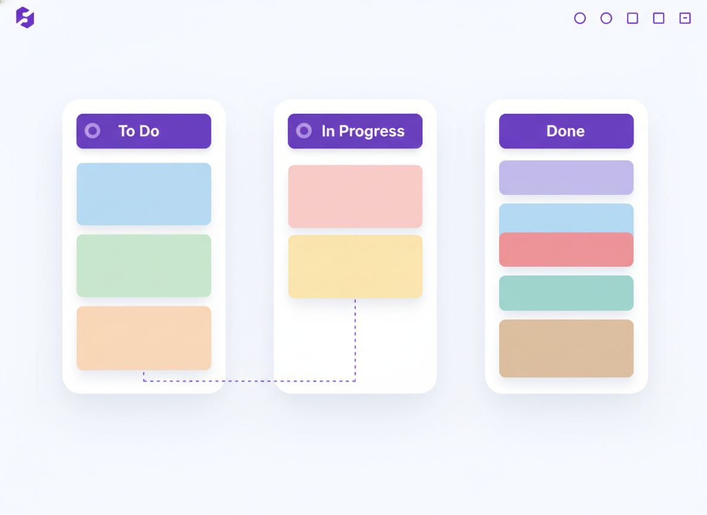
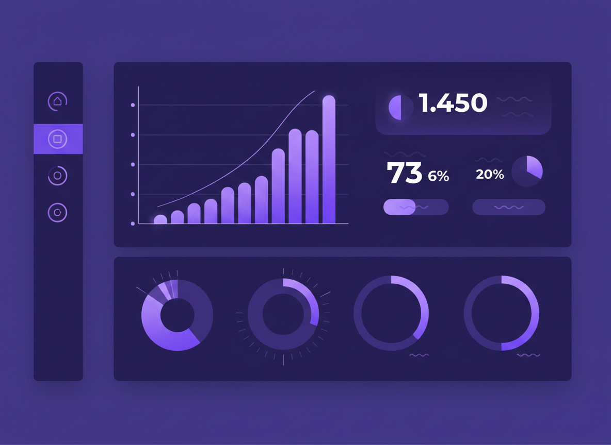
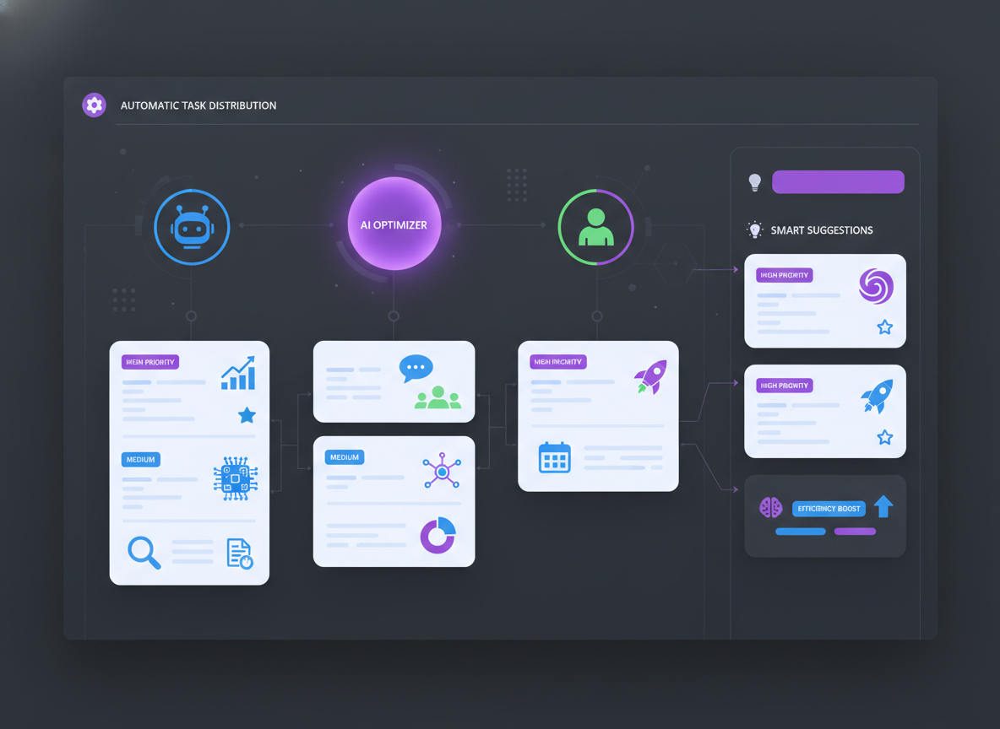

多くのチームが抱える3つの課題。FlowBoardはこれらをまとめて解決します。
チャット、タスク管理、ドキュメント...複数のツールを行き来して、情報が散らばる。 大事な情報が埋もれ、チーム全体の生産性が低下。
「あのタスク、今どうなってる？」毎回聞かないとわからない。 プロジェクト全体の進捗が不透明で、リスクに気づけない。
リモートワークで生まれる認識のズレ。 「言った・言わない」問題や、重要な決定事項が共有されないまま進行。
チームに必要な機能を、直感的なインターフェースに凝縮しました。
ドラッグ&ドロップでタスクを自由に移動。ステータス、担当者、期限をひと目で把握できます。 カスタムフィールドやラベルで、チームに合ったワークフローを構築。


プロジェクトの健康状態をリアルタイムで可視化。バーンダウンチャート、ベロシティ、 ボトルネック検出で、問題が大きくなる前に対処できます。
AIがチームメンバーのスキル、稼働状況、過去の実績を分析し、 最適な担当者にタスクを自動アサイン。リソースの偏りを解消します。

チームの規模に合わせて選べる3つのプラン。まずは無料でお試しください。
成長するチーム向け
大規模組織向け
FlowBoardを導入した企業のリアルな声をご紹介します。
「以前は3つのツールを使い分けていましたが、FlowBoardに統合してからチーム全体の作業効率が明らかに向上しました。 特にAI振り分け機能は革命的で、マネージャーの負担が大幅に減りました。」
「デザインチーム15名で利用しています。リアルタイムの進捗ダッシュボードのおかげで、週次ミーティングの時間が半分になりました。 UIも直感的で、導入から全員が使いこなすまで1週間もかかりませんでした。」
「50名規模のエンジニアリングチームでEnterprise版を導入。SSO連携とセキュリティ要件も完璧にクリアし、 IT部門も安心して承認できました。サポートの対応も迅速で助かっています。」